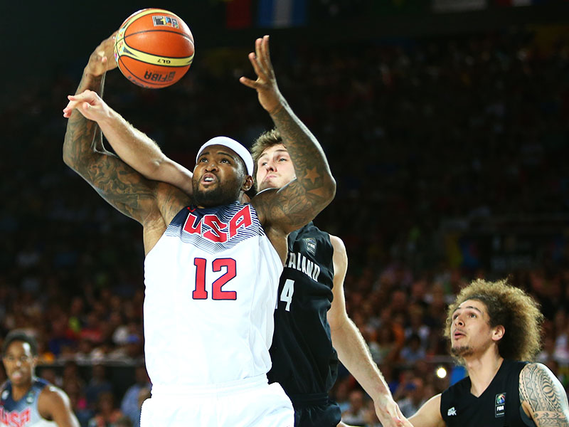
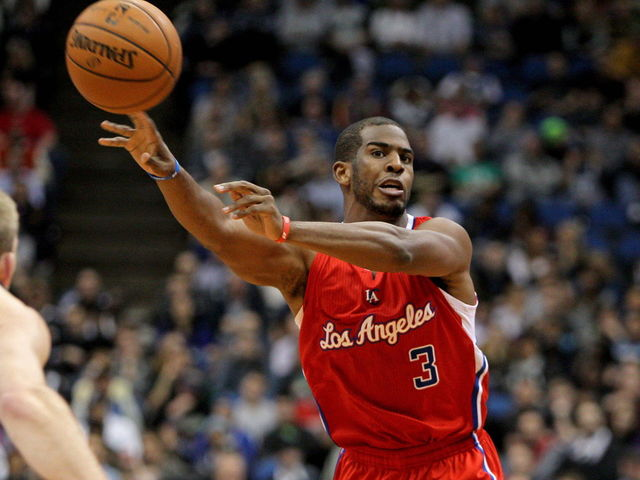
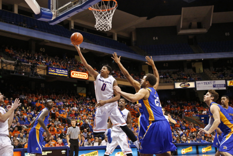
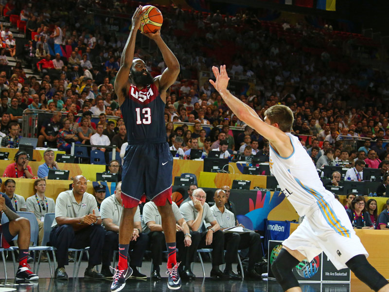
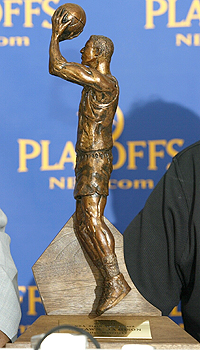
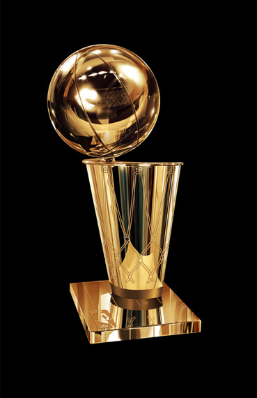
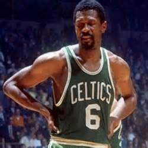
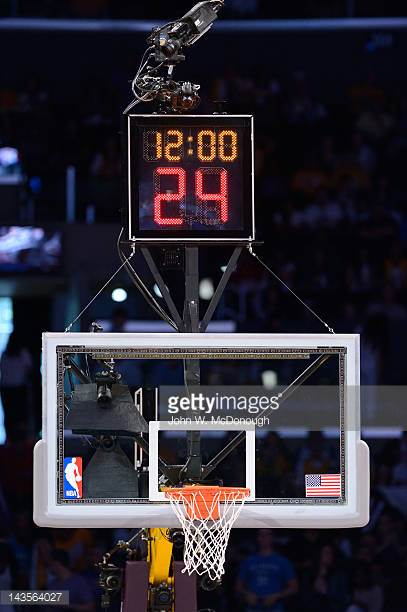
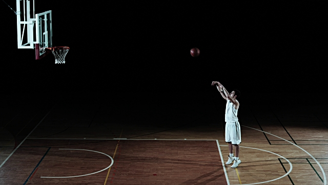

Rebound-The act of grabbing the ball after a missed shot

Image courtesy of https://www.usab.com/youth/news/2012/04/5simple-ways-to-improve-your-basketball-rebounding.aspx
Assist-The act of passing to a teammate who subsequently scores a basket

Image courtesy of https://www.thescore.com/nba/news/364440-get-to-know-an-advanced-stat-advanced-assist-measures
Field Goal- A made shot attempt

Image courtesy of https://devinferrellphotography.wordpress.com/2014/01/26/boise-state-basketball-vs-san-jose-state-university/
3-point Field Goal- A made shot attempt from behind the three point line (an average of 23ft away from the basket)

Image courtesy of https://www.usab.com/youth/news/2010/09/3ways-to-make-more-3-point-shots.aspx
Sixth Man- The first person in a team's bench rotation of players

Image courtesy of https://malikjacksonbrownportfolio.weebly.com/blog/received-a-trophy-for-the-sixth-man-of-the-year-award-whitby-saints-basketball
Larry O'Brien Trophy- The NBA Championship Trophy

Image courtesy of https://www.copytrophy.com/product/nba-finals-trophy-larry-o-brien-trophy-replica/
Bill Russell- 11 time NBA champion and basketball hall of famer. The Finals MVP trophy named after him due to his championship success

Image courtesy of https://smallthoughtsinasportsworld.wordpress.com/2016/08/23/smallthoughts-old-school-tuesday-bill-russell/
Shot Clock- Teams on offense have 24 seconds to shoot the ball in the NBA. This timer is called the shot clock, and the only way to reset it is by getting fouled or having the ball bounce off the rim and grabbing the offensive rebounds

Image courtesy of https://www.gettyimages.co.uk/photos/basketball-shot-clock?mediatype=photography&phrase=basketball%20shot%20clock&sort=mostpopular
Free Throw Line- A line 15 feet away from the basket, parallel to the backboard. Shots from here are unconstested, are worth one point and are generally awarded to players who are fouled in the act of shooting

Image courtesy of https://www.istockphoto.com/ca/videos/free-throw?sort=mostpopular&offlinecontent=include&phrase=free%20throw